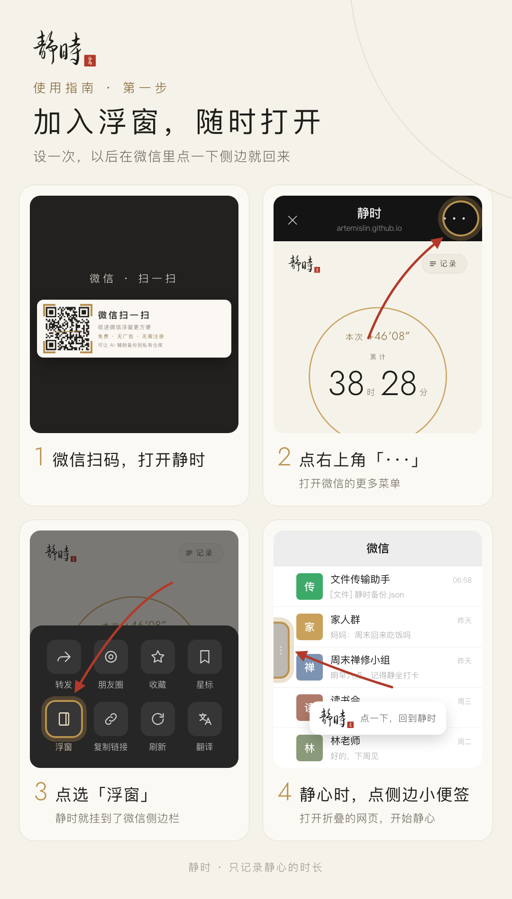
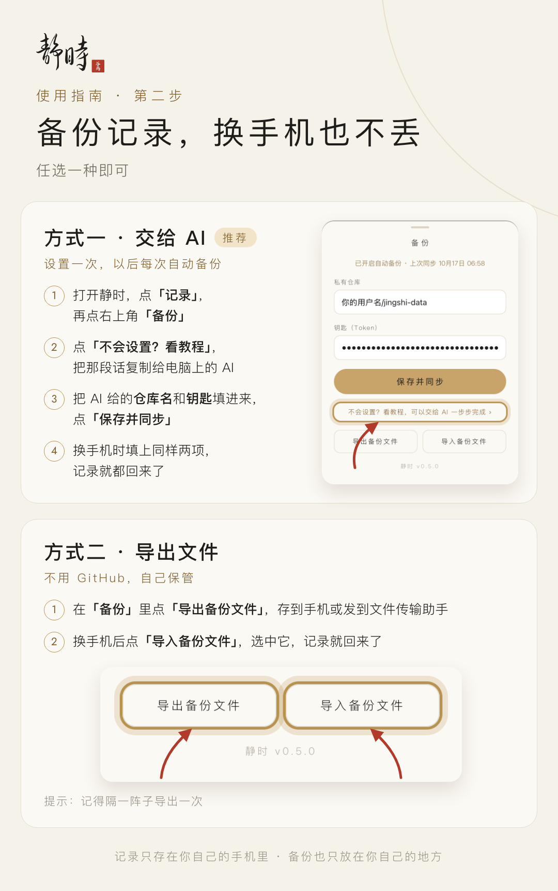

使用指南
静时只做一件事：记录你每一次静心的时长。记录存在你自己的手机上；开了备份，换手机也不会丢。
返回静时
第一次点「开始静心」时，如果问能不能使用「动作与方向」，选允许，拿起手机才会自动停止计时。

方式一要发给 AI 的那段话
你需要：一台装了 WorkBuddy（或其他能操作电脑的 AI 助手）的电脑。没有 GitHub 账号也没关系，AI 会带你注册，邮箱验证码和人机验证要你自己点一下。把下面这段话完整复制，发给电脑上的 AI：
AI 做完后会给你仓库名和钥匙两样东西：
- 在电脑微信里把它们发到「文件传输助手」。
- 手机上打开静时，点右上角「记录」，再点右上角「备份」。
- 把仓库名和钥匙分别粘贴进去，点「保存并同步」。看到「备份已开启」就好了。
- 回到文件传输助手，把那条钥匙消息删掉。
钥匙相当于备份的密码，只能读写 jingshi-data 这一个仓库，碰不到你 GitHub 上的其他东西。别发给别人。
·换手机了怎么办
- 新手机上在微信里打开静时。
- 进「记录 › 备份」，填上同一个仓库名和钥匙，点「保存并同步」。以前的记录会全部回来。
钥匙找不到了？把上面那段话再发给 AI 一次就行。仓库已经存在，它会跳过建仓库，只帮你生成一把新钥匙。
·常见问题
- 别人能看到我的记录吗？
- 不能。记录存在你手机上，备份在你自己的私有仓库里。别人打开同一个链接，看到的是他自己的空记录。
- 备份页提示「钥匙无效或已过期」？
- 钥匙到期了。把上面那段话再发给 AI，生成一把新钥匙，重新填进去就好。
- 不想用 GitHub？
- 也可以在「备份」里点「导出备份文件」，自己存起来；换手机时用「导入备份文件」恢复。只是要记得定期导出。
- 会统计我的数据吗？
- 只匿名统计页面被打开了几次、「开始静心」这类操作发生了几次，用的是不记个人信息、不用 cookie 的 GoatCounter。你的静心记录、时长和备份钥匙都不会上传。
- 清理了微信缓存，记录没了？
- 开了备份的话，进「记录 › 备份」，重新填上仓库名和钥匙，点「保存并同步」，记录会从 GitHub 回来。